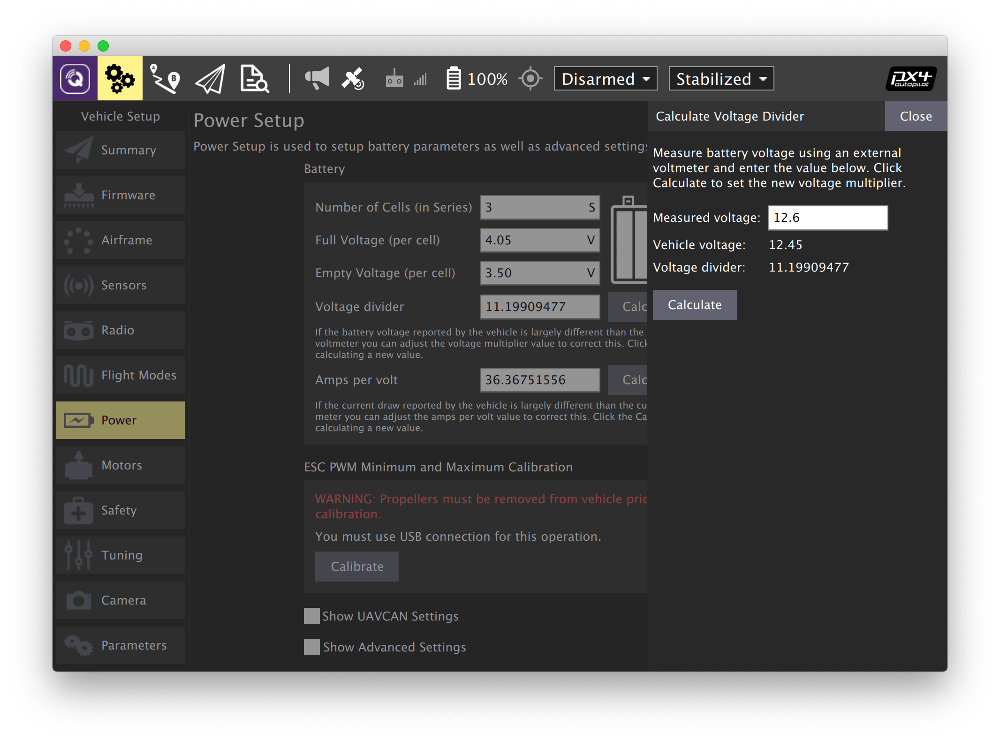
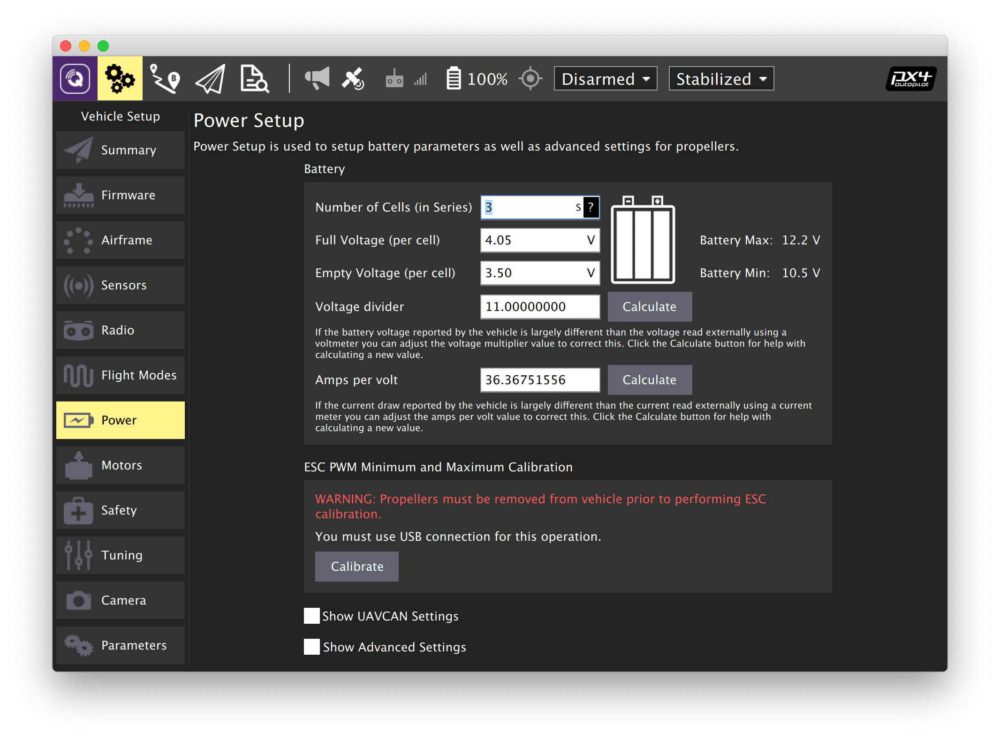

Чтобы откалибровать параметры, связанные с электропитанием, зайдите во вкладку Vehicle Setup и выберите меню Power.
Подсказка Калибровка делителя напряжения должна выполняться с подключенным АКБ.
В случае отсутствия индикатора напряжения или невозможности ручной калибровки, установите усредненное значение делителя напряжения для комплекта Клевер 4 (Voltage divider = 11).

Дополнительная информация: https://docs.qgroundcontrol.com/en/SetupView/Power.html.
Подсказка Никогда не выполняйте калибровку регуляторов с установленными пропеллерами. В некоторых случаях моторы могут начать вращаться на максимальной скорости.

Дополнительная информация: https://docs.px4.io/master/en/advanced_config/esc_calibration.html.